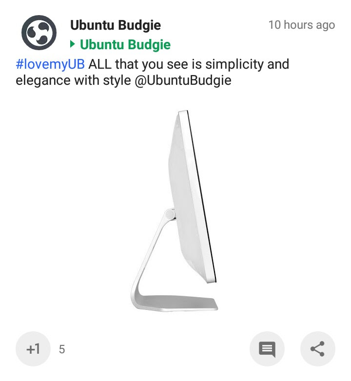

Ubuntu Budgie
-
2017-08-20T08:11:45+0000
- Updated:
2017-08-20T16:06:24+0000
#lovemyUB
hands on simplicity and elegance
#myUB hands on simplicity and elegance
Shared to the community
Ubuntu Budgie
- Public
+1'd by:
Jocix
,
Zsolt Katona
,
Luciano Ribeiro
Ikey Doherty
-
2017-08-20T10:19:00+0000
Fiiine! :P OK delete my comments and your comments, and I'll leave just this comment here, going:
Oooooooooh :D
Andi Hope
-
2017-08-20T12:21:40+0000
What exactly am I looking at????
Larry Chase
-
2017-08-20T15:10:36+0000
+
Ikey Doherty
+
david mohammed
What's going on? I know one of you knows.
Ikey Doherty
-
2017-08-20T15:26:46+0000
I know nothin' :P
Larry Chase
-
2017-08-20T15:31:33+0000
- Updated:
2017-08-20T17:21:24+0000
Also
+
Ubuntu Budgie
, the tag you used is for a Korean pop star.
Prasad Kumar Manigaradi
-
2017-08-20T16:05:31+0000
- Updated:
2017-08-20T16:08:09+0000
Maybe laptop with Ubuntu Budgie pre installed. And I don't it's from Station X as they already have option for UB.
Ubuntu Budgie
-
2017-08-20T16:29:58+0000
+
Larry Chase
Changed the tag 😊
Larry Chase
-
2017-08-20T16:33:28+0000
- Updated:
2017-08-20T16:34:37+0000
+
Prasad Kumar Manigaradi
Do you think it could be an x86 tablet?
Larry Chase
-
2017-08-21T12:27:22+0000
+
Blaž Mežnaršič
Me neither. I just really want a decent x86 Linux tablet for a good price.
Prasad Kumar Manigaradi
-
2017-08-21T14:35:28+0000
+
Larry Chase
Budgie seems to be desktop centric. It might need Raven to slide when swiped from the edge and have all toggles and notification panel implemented. For now Gnome might be a slightly better choice for a tablet.
Larry Chase
-
2017-08-21T17:55:39+0000
+
Prasad Kumar Manigaradi
Budgie is pretty finger-friendly when you scale it up a little.
Larry Chase
-
2017-08-21T17:59:24+0000
- Updated:
2017-08-21T18:01:20+0000
Huh. Hey
+
Ubuntu Budgie
, did a Chinese company take over your account or something?



Oooooooooh :D